Québec main effects, nonlinear
Loading details
library(data.table); library(ggplot2); library(knitr); library(lme4); library(QuantPsyc); library(blme)
opts_chunk$set(warning=TRUE, cache=TRUE,tidy=FALSE,autodep=TRUE,dev=c('png','pdf'),fig.width=20,fig.height=12.5,out.width='1440px',out.height='900px',cache.extra=file.info('rpqa.rdata')[, 'mtime'])
source("0__helpers.R")
load("rpqa.rdata")
Analysis description
Data subset
The rpqa.1 dataset contains only those participants where paternal age is known and the birthdate is between 1630 and 1750.
Model description
All of the following models have the following in common:
Multivariate normal prior
Using the R package blme which provides a thin Bayesian wrapper around lme4, we define a weak multivariate normal prior on the fixed effects. Especially in models where we have many covariates and the outcome has little variability (e.g. child mortality in modern Sweden), this helps us to combat complete separation and the Hauck-Donner effect. In the absence of these conditions, the extremely weak prior (SD = 9) leads to results that are identical or very similar to the standard lme4 models.
Optimizer settings
Bobyqa is fairly robust to convergence failures. In addition to using Bobyqa, we center some variables that otherwise lead to large eigenvalues.
Model description
All of the following models have the following in common:
Multivariate normal prior
Using the R package blme which provides a thin Bayesian wrapper around lme4, we define a weak multivariate normal prior on the fixed effects. Especially in models where we have many covariates and the outcome has little variability (e.g. child mortality in modern Sweden), this helps us to combat complete separation and the Hauck-Donner effect. In the absence of these conditions, the extremely weak prior (SD = 9) leads to results that are identical or very similar to the standard lme4 models.
Optimizer settings
Bobyqa is fairly robust to convergence failures. In addition to using Bobyqa, we center some variables that otherwise lead to large eigenvalues.
control_defaults = glmerControl(optimizer = "bobyqa")
Main predictor
The main predictor, paternal age, has been binned into meaningful bins. This way, we let the data speak and can see whether the shape of the relationship is consistent with a linear effect. To this end we plot a linear regression through the best estimates for each factor (inversely weighted by confidence interval width, i.e. certainty). Even if a nonlinear fit might be slightly better, our theory clearly predicts a linear fit, so we are satisfied it the data is consistent with a linear effect.
formr::crosstabs(rpqa.1$paternalage.factor)
## rpqa.1$paternalage.factor
## [0,25] (25,30] (30,35] (35,40] (40,45] (45,50] (50,55] (55,90]
## 6748 20914 24900 21798 15871 9504 4529 2835
Covariates
As in our main models, we control for birth.cohort (birth years in five equally large bins), male sex. Additionally, we control for paternal and maternal loss (whether either parent died within 5 years of the birth), for maternal age (bins of 14-20, 20-35 and 35-50), the number of siblings.
Model stratification
We added random intercepts for each family (father-mother dyad). We then controlled for the average paternal age in the family. Hence, the paternal age effects in the plot are split into those between families and those within families or between siblings. The relevant effect for our hypothesized mechanism, de novo mutations, is paternal age between siblings.
Episodes of selection
Here, episodes of selection refers to survival, mating success, reproductive success. To steer clear of sacrificial pseudo-replication, we make sure that each effect cannot be explained by the episode of selection preceding it. At its simplest, we check for effect on survival to reproduction only among those who lived to their first birthday. In later models, we look for an effect on number of children only among those who married and control their number of spouses.
Survival to first year
Survive_infancy <- bglmer(
survive1y ~ maternalage.factor + paternalloss + maternalloss + center(nr.siblings) + birth.cohort + male + paternalage.mean + paternalage.factor + urban + (1|idParents),
data= rpqa.1,
family = 'binomial', control = control_defaults,
fixef.prior = normal() )
summary(Survive_infancy)
## Cov prior : idParents ~ wishart(df = 3.5, scale = Inf, posterior.scale = cov, common.scale = TRUE)
## Fixef prior: normal(sd = c(10, 2.5, ...), corr = c(0 ...), common.scale = FALSE)
## Prior dev : 77.84
##
## Generalized linear mixed model fit by maximum likelihood (Laplace
## Approximation) [bglmerMod]
## Family: binomial ( logit )
## Formula: survive1y ~ maternalage.factor + paternalloss + maternalloss +
## center(nr.siblings) + birth.cohort + male + paternalage.mean +
## paternalage.factor + urban + (1 | idParents)
## Data: rpqa.1
## Control: control_defaults
##
## AIC BIC logLik deviance df.resid
## 75013 75207 -37485 74971 77002
##
## Scaled residuals:
## Min 1Q Median 3Q Max
## -3.906 0.277 0.386 0.498 2.660
##
## Random effects:
## Groups Name Variance Std.Dev.
## idParents (Intercept) 0.486 0.697
## Number of obs: 77023, groups: idParents, 13107
##
## Fixed effects:
## Estimate Std. Error z value Pr(>|z|)
## (Intercept) 2.38743 0.05338 44.7 < 2e-16 ***
## maternalage.factor(14,20] -0.26154 0.04453 -5.9 4.3e-09 ***
## maternalage.factor(35,50] -0.13587 0.03115 -4.4 1.3e-05 ***
## paternalloss -0.27085 0.04336 -6.2 4.2e-10 ***
## maternalloss -0.84295 0.03871 -21.8 < 2e-16 ***
## center(nr.siblings) -0.04680 0.00338 -13.9 < 2e-16 ***
## birth.cohort(1706,1723] -0.13679 0.03707 -3.7 0.00022 ***
## birth.cohort(1723,1734] -0.48488 0.03718 -13.0 < 2e-16 ***
## birth.cohort(1734,1743] -0.55841 0.03700 -15.1 < 2e-16 ***
## birth.cohort(1743,1750] -0.94426 0.03645 -25.9 < 2e-16 ***
## male -0.28086 0.01921 -14.6 < 2e-16 ***
## paternalage.mean 0.16729 0.03066 5.5 4.9e-08 ***
## paternalage.factor(25,30] 0.06827 0.04523 1.5 0.13114
## paternalage.factor(30,35] 0.05012 0.04772 1.1 0.29356
## paternalage.factor(35,40] 0.00102 0.05251 0.0 0.98447
## paternalage.factor(40,45] -0.09382 0.06057 -1.5 0.12141
## paternalage.factor(45,50] -0.17293 0.07141 -2.4 0.01544 *
## paternalage.factor(50,55] -0.30853 0.08704 -3.5 0.00039 ***
## paternalage.factor(55,90] -0.27264 0.11045 -2.5 0.01357 *
## urban -0.76433 0.02628 -29.1 < 2e-16 ***
## ---
## Signif. codes: 0 '***' 0.001 '**' 0.01 '*' 0.05 '.' 0.1 ' ' 1
##
## Correlation of Fixed Effects:
## (Intr) m.(14, m.(35, ptrnll mtrnll cnt(.) b.(170 b.(172 b.(173
## mtr.(14,20] -0.335
## mtr.(35,50] 0.180 -0.090
## paternallss 0.020 -0.033 0.070
## maternallss 0.025 -0.043 0.094 0.088
## cntr(nr.sb) 0.004 -0.004 -0.038 0.203 0.264
## b.(1706,172 -0.414 0.081 -0.033 -0.004 -0.001 -0.031
## b.(1723,173 -0.456 0.099 -0.038 0.009 0.006 -0.027 0.604
## b.(1734,174 -0.448 0.086 -0.064 0.030 0.007 -0.033 0.582 0.665
## b.(1743,175 -0.452 0.097 -0.061 0.006 0.004 -0.035 0.585 0.650 0.696
## male -0.200 0.002 0.000 0.011 0.010 0.007 -0.004 0.005 0.003
## paternlg.mn 0.266 -0.189 0.462 0.174 0.236 -0.126 0.024 0.054 0.076
## ptr.(25,30] -0.694 0.170 -0.106 -0.045 -0.051 0.003 0.014 0.010 0.000
## ptr.(30,35] -0.733 0.268 -0.203 -0.078 -0.105 -0.004 0.022 0.017 -0.005
## ptr.(35,40] -0.721 0.300 -0.334 -0.111 -0.145 -0.015 0.018 0.023 -0.004
## ptr.(40,45] -0.680 0.301 -0.466 -0.139 -0.174 -0.017 0.015 0.024 -0.003
## ptr.(45,50] -0.626 0.291 -0.528 -0.159 -0.183 -0.010 0.013 0.018 -0.003
## ptr.(50,55] -0.558 0.270 -0.529 -0.167 -0.179 0.007 0.013 0.012 0.000
## ptr.(55,90] -0.487 0.248 -0.510 -0.189 -0.184 0.032 0.005 -0.001 -0.013
## urban -0.179 0.000 -0.002 -0.014 0.006 0.061 0.049 0.084 0.114
## b.(174 male ptrnl. p.(25, p.(30, p.(35, p.(40, p.(45, p.(50,
## mtr.(14,20]
## mtr.(35,50]
## paternallss
## maternallss
## cntr(nr.sb)
## b.(1706,172
## b.(1723,173
## b.(1734,174
## b.(1743,175
## male 0.005
## paternlg.mn 0.094 -0.002
## ptr.(25,30] -0.005 0.001 -0.200
## ptr.(30,35] -0.008 0.004 -0.350 0.776
## ptr.(35,40] -0.017 0.003 -0.472 0.741 0.814
## ptr.(40,45] -0.019 0.003 -0.567 0.678 0.770 0.824
## ptr.(45,50] -0.017 0.005 -0.627 0.607 0.710 0.780 0.818
## ptr.(50,55] -0.013 0.006 -0.651 0.526 0.632 0.709 0.757 0.769
## ptr.(55,90] -0.017 0.002 -0.690 0.449 0.559 0.642 0.698 0.718 0.707
## urban 0.135 0.026 -0.022 -0.002 -0.010 -0.014 -0.008 -0.007 -0.007
## p.(55,
## mtr.(14,20]
## mtr.(35,50]
## paternallss
## maternallss
## cntr(nr.sb)
## b.(1706,172
## b.(1723,173
## b.(1734,174
## b.(1743,175
## male
## paternlg.mn
## ptr.(25,30]
## ptr.(30,35]
## ptr.(35,40]
## ptr.(40,45]
## ptr.(45,50]
## ptr.(50,55]
## ptr.(55,90]
## urban -0.005
Survive_infancy_coefs = fortify_mine(Survive_infancy)
plot_fortified_mer(Survive_infancy_coefs, "Surviving infancy / first year")
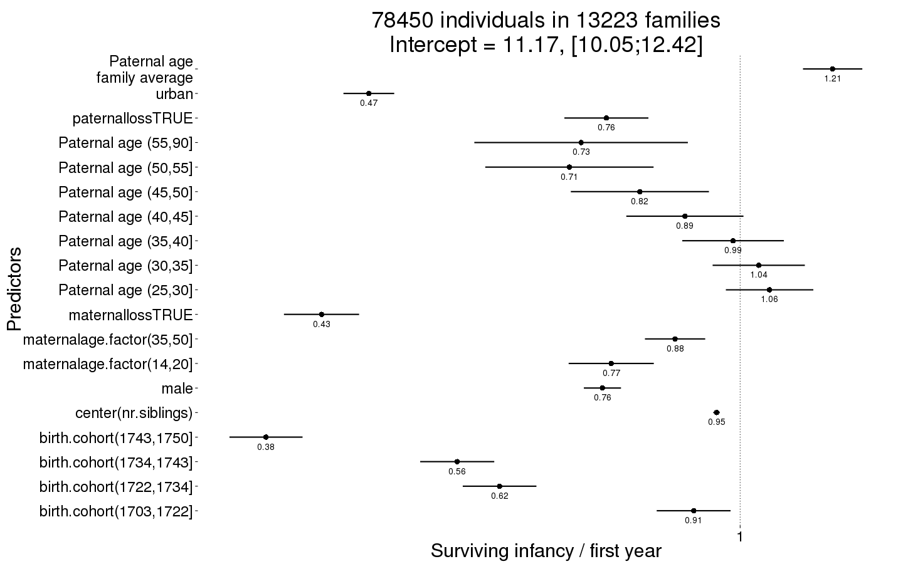
Survive_infancy_boot = plot_factor_response(Survive_infancy)

Survival to reproductive age
Survive_reproductive <- bglmer(
surviveR ~ maternalage.factor + paternalloss + maternalloss + center(nr.siblings) + birth.cohort + male + paternalage.mean + paternalage.factor + urban + (1|idParents),
data= rpqa.1, subset = survive1y == TRUE,
family = 'binomial', control = control_defaults,
fixef.prior = normal() )
summary(Survive_reproductive)
## Cov prior : idParents ~ wishart(df = 3.5, scale = Inf, posterior.scale = cov, common.scale = TRUE)
## Fixef prior: normal(sd = c(10, 2.5, ...), corr = c(0 ...), common.scale = FALSE)
## Prior dev : 77.98
##
## Generalized linear mixed model fit by maximum likelihood (Laplace
## Approximation) [bglmerMod]
## Family: binomial ( logit )
## Formula: surviveR ~ maternalage.factor + paternalloss + maternalloss +
## center(nr.siblings) + birth.cohort + male + paternalage.mean +
## paternalage.factor + urban + (1 | idParents)
## Data: rpqa.1
## Control: control_defaults
## Subset: survive1y == TRUE
##
## AIC BIC logLik deviance df.resid
## 47810 47999 -23884 47768 60699
##
## Scaled residuals:
## Min 1Q Median 3Q Max
## -3.879 0.277 0.333 0.395 1.034
##
## Random effects:
## Groups Name Variance Std.Dev.
## idParents (Intercept) 0.399 0.632
## Number of obs: 60720, groups: idParents, 12444
##
## Fixed effects:
## Estimate Std. Error z value Pr(>|z|)
## (Intercept) 2.68669 0.06836 39.3 < 2e-16 ***
## maternalage.factor(14,20] 0.03289 0.06059 0.5 0.5873
## maternalage.factor(35,50] 0.03611 0.04022 0.9 0.3693
## paternalloss -0.21996 0.05478 -4.0 5.9e-05 ***
## maternalloss -0.44398 0.05258 -8.4 < 2e-16 ***
## center(nr.siblings) -0.00429 0.00412 -1.0 0.2977
## birth.cohort(1706,1723] -0.23782 0.04445 -5.4 8.8e-08 ***
## birth.cohort(1723,1734] -0.56485 0.04427 -12.8 < 2e-16 ***
## birth.cohort(1734,1743] -0.35445 0.04555 -7.8 7.2e-15 ***
## birth.cohort(1743,1750] -0.79556 0.04447 -17.9 < 2e-16 ***
## male -0.07129 0.02498 -2.9 0.0043 **
## paternalage.mean 0.06677 0.03811 1.8 0.0798 .
## paternalage.factor(25,30] -0.00584 0.06025 -0.1 0.9228
## paternalage.factor(30,35] -0.08452 0.06277 -1.3 0.1781
## paternalage.factor(35,40] -0.16020 0.06861 -2.3 0.0196 *
## paternalage.factor(40,45] -0.14210 0.07919 -1.8 0.0728 .
## paternalage.factor(45,50] -0.19293 0.09308 -2.1 0.0382 *
## paternalage.factor(50,55] -0.20383 0.11450 -1.8 0.0750 .
## paternalage.factor(55,90] -0.28416 0.14197 -2.0 0.0453 *
## urban -0.77466 0.03169 -24.4 < 2e-16 ***
## ---
## Signif. codes: 0 '***' 0.001 '**' 0.01 '*' 0.05 '.' 0.1 ' ' 1
##
## Correlation of Fixed Effects:
## (Intr) m.(14, m.(35, ptrnll mtrnll cnt(.) b.(170 b.(172 b.(173
## mtr.(14,20] -0.305
## mtr.(35,50] 0.173 -0.071
## paternallss 0.027 -0.038 0.084
## maternallss 0.029 -0.042 0.092 0.090
## cntr(nr.sb) 0.014 -0.005 -0.033 0.217 0.237
## b.(1706,172 -0.384 0.075 -0.037 -0.005 -0.001 -0.030
## b.(1723,173 -0.424 0.095 -0.042 0.010 0.000 -0.033 0.589
## b.(1734,174 -0.400 0.078 -0.063 0.030 0.006 -0.033 0.558 0.616
## b.(1743,175 -0.413 0.089 -0.060 0.004 0.000 -0.028 0.570 0.615 0.625
## male -0.190 0.007 0.000 0.013 0.008 -0.001 -0.002 0.007 0.005
## paternlg.mn 0.281 -0.177 0.468 0.189 0.227 -0.119 0.020 0.049 0.067
## ptr.(25,30] -0.727 0.151 -0.100 -0.043 -0.041 -0.001 0.008 0.010 -0.001
## ptr.(30,35] -0.769 0.239 -0.192 -0.080 -0.091 -0.009 0.017 0.021 -0.001
## ptr.(35,40] -0.759 0.269 -0.317 -0.118 -0.130 -0.017 0.014 0.026 0.002
## ptr.(40,45] -0.712 0.271 -0.440 -0.147 -0.156 -0.018 0.012 0.031 0.004
## ptr.(45,50] -0.655 0.261 -0.504 -0.166 -0.164 -0.008 0.013 0.024 0.007
## ptr.(50,55] -0.579 0.240 -0.501 -0.172 -0.166 0.008 0.015 0.018 0.010
## ptr.(55,90] -0.516 0.225 -0.499 -0.197 -0.170 0.039 0.004 0.005 -0.005
## urban -0.181 -0.005 -0.004 -0.012 -0.008 0.042 0.059 0.098 0.124
## b.(174 male ptrnl. p.(25, p.(30, p.(35, p.(40, p.(45, p.(50,
## mtr.(14,20]
## mtr.(35,50]
## paternallss
## maternallss
## cntr(nr.sb)
## b.(1706,172
## b.(1723,173
## b.(1734,174
## b.(1743,175
## male 0.002
## paternlg.mn 0.077 0.005
## ptr.(25,30] -0.002 0.002 -0.197
## ptr.(30,35] 0.004 0.006 -0.349 0.788
## ptr.(35,40] -0.002 0.004 -0.475 0.755 0.825
## ptr.(40,45] 0.000 0.001 -0.570 0.688 0.777 0.826
## ptr.(45,50] 0.002 0.005 -0.634 0.616 0.716 0.782 0.811
## ptr.(50,55] 0.006 0.007 -0.654 0.529 0.632 0.705 0.744 0.753
## ptr.(55,90] -0.003 -0.001 -0.710 0.462 0.572 0.654 0.704 0.724 0.702
## urban 0.152 0.035 -0.019 0.005 -0.002 -0.005 -0.002 -0.004 -0.004
## p.(55,
## mtr.(14,20]
## mtr.(35,50]
## paternallss
## maternallss
## cntr(nr.sb)
## b.(1706,172
## b.(1723,173
## b.(1734,174
## b.(1743,175
## male
## paternlg.mn
## ptr.(25,30]
## ptr.(30,35]
## ptr.(35,40]
## ptr.(40,45]
## ptr.(45,50]
## ptr.(50,55]
## ptr.(55,90]
## urban -0.001
Survive_reproductive_coefs = fortify_mine(Survive_reproductive)
plot_fortified_mer(Survive_reproductive_coefs, "Surviving to reproductive age / 15 years")
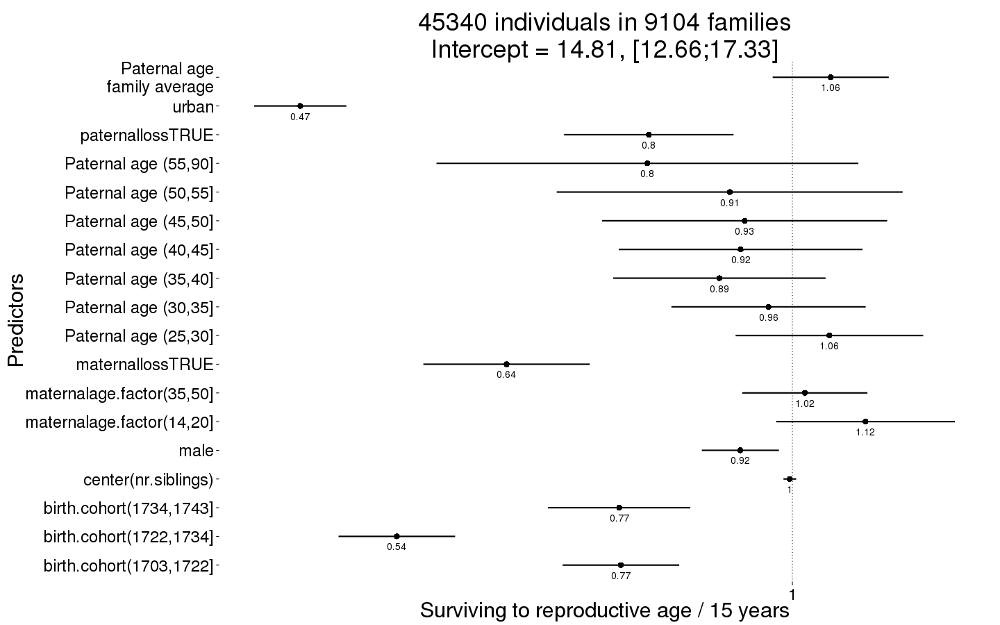
Survive_reproductive_boot = plot_factor_response(Survive_reproductive)
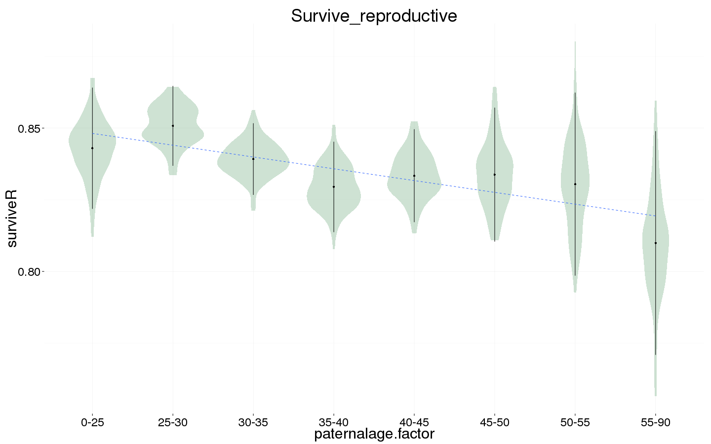
Ever married
Ever_married <- bglmer(
ever_married ~ maternalage.factor + paternalloss + maternalloss + center(nr.siblings) + birth.cohort + male + paternalage.mean + paternalage.factor + urban + (1|idParents),
data= rpqa.1, subset = (surviveR == T | is.na(surviveR)),
family = 'binomial', control = control_defaults,
fixef.prior = normal() )
summary(Ever_married)
## Cov prior : idParents ~ wishart(df = 3.5, scale = Inf, posterior.scale = cov, common.scale = TRUE)
## Fixef prior: normal(sd = c(10, 2.5, ...), corr = c(0 ...), common.scale = FALSE)
## Prior dev : 77.88
##
## Generalized linear mixed model fit by maximum likelihood (Laplace
## Approximation) [bglmerMod]
## Family: binomial ( logit )
## Formula:
## ever_married ~ maternalage.factor + paternalloss + maternalloss +
## center(nr.siblings) + birth.cohort + male + paternalage.mean +
## paternalage.factor + urban + (1 | idParents)
## Data: rpqa.1
## Control: control_defaults
## Subset: (surviveR == T | is.na(surviveR))
##
## AIC BIC logLik deviance df.resid
## 63404 63592 -31681 63362 59302
##
## Scaled residuals:
## Min 1Q Median 3Q Max
## -3.038 0.328 0.452 0.554 1.319
##
## Random effects:
## Groups Name Variance Std.Dev.
## idParents (Intercept) 0.364 0.604
## Number of obs: 59323, groups: idParents, 12340
##
## Fixed effects:
## Estimate Std. Error z value Pr(>|z|)
## (Intercept) 1.85874 0.05607 33.2 < 2e-16 ***
## maternalage.factor(14,20] -0.07796 0.04674 -1.7 0.09532 .
## maternalage.factor(35,50] -0.07163 0.03311 -2.2 0.03049 *
## paternalloss -0.09586 0.04740 -2.0 0.04313 *
## maternalloss -0.17019 0.04794 -3.5 0.00039 ***
## center(nr.siblings) 0.00571 0.00350 1.6 0.10246
## birth.cohort(1706,1723] 0.07285 0.03399 2.1 0.03211 *
## birth.cohort(1723,1734] -0.05876 0.03520 -1.7 0.09502 .
## birth.cohort(1734,1743] -0.00958 0.03498 -0.3 0.78412
## birth.cohort(1743,1750] 0.12221 0.03712 3.3 0.00099 ***
## male -0.63934 0.02070 -30.9 < 2e-16 ***
## paternalage.mean -0.07361 0.03119 -2.4 0.01826 *
## paternalage.factor(25,30] -0.06855 0.05075 -1.4 0.17679
## paternalage.factor(30,35] -0.17146 0.05276 -3.2 0.00116 **
## paternalage.factor(35,40] -0.18007 0.05763 -3.1 0.00178 **
## paternalage.factor(40,45] -0.17793 0.06566 -2.7 0.00673 **
## paternalage.factor(45,50] -0.12799 0.07712 -1.7 0.09699 .
## paternalage.factor(50,55] -0.16695 0.09306 -1.8 0.07282 .
## paternalage.factor(55,90] -0.08050 0.11564 -0.7 0.48635
## urban -0.55844 0.02789 -20.0 < 2e-16 ***
## ---
## Signif. codes: 0 '***' 0.001 '**' 0.01 '*' 0.05 '.' 0.1 ' ' 1
##
## Correlation of Fixed Effects:
## (Intr) m.(14, m.(35, ptrnll mtrnll cnt(.) b.(170 b.(172 b.(173
## mtr.(14,20] -0.317
## mtr.(35,50] 0.170 -0.088
## paternallss 0.029 -0.037 0.083
## maternallss 0.031 -0.038 0.081 0.073
## cntr(nr.sb) 0.025 -0.003 -0.024 0.206 0.214
## b.(1706,172 -0.334 0.083 -0.039 -0.005 -0.002 -0.038
## b.(1723,173 -0.363 0.099 -0.043 0.005 -0.003 -0.048 0.535
## b.(1734,174 -0.351 0.082 -0.067 0.030 0.002 -0.044 0.515 0.572
## b.(1743,175 -0.327 0.087 -0.059 0.000 -0.005 -0.037 0.482 0.517 0.553
## male -0.222 0.007 0.002 0.008 0.008 0.002 -0.002 0.002 0.001
## paternlg.mn 0.269 -0.201 0.470 0.182 0.203 -0.114 0.027 0.057 0.077
## ptr.(25,30] -0.753 0.152 -0.099 -0.044 -0.043 -0.004 0.010 0.011 0.002
## ptr.(30,35] -0.794 0.244 -0.191 -0.076 -0.084 -0.008 0.019 0.022 0.000
## ptr.(35,40] -0.781 0.281 -0.314 -0.110 -0.116 -0.014 0.016 0.029 0.004
## ptr.(40,45] -0.735 0.287 -0.437 -0.140 -0.142 -0.016 0.013 0.030 0.004
## ptr.(45,50] -0.674 0.280 -0.501 -0.159 -0.146 -0.005 0.012 0.020 0.005
## ptr.(50,55] -0.601 0.265 -0.503 -0.166 -0.151 0.010 0.011 0.015 0.006
## ptr.(55,90] -0.529 0.249 -0.503 -0.186 -0.154 0.038 -0.001 0.000 -0.012
## urban -0.164 -0.005 0.002 -0.018 -0.013 0.034 0.068 0.104 0.124
## b.(174 male ptrnl. p.(25, p.(30, p.(35, p.(40, p.(45, p.(50,
## mtr.(14,20]
## mtr.(35,50]
## paternallss
## maternallss
## cntr(nr.sb)
## b.(1706,172
## b.(1723,173
## b.(1734,174
## b.(1743,175
## male -0.001
## paternlg.mn 0.084 0.004
## ptr.(25,30] 0.000 0.000 -0.195
## ptr.(30,35] -0.002 0.004 -0.342 0.800
## ptr.(35,40] -0.007 0.004 -0.462 0.765 0.834
## ptr.(40,45] -0.007 -0.001 -0.558 0.704 0.791 0.835
## ptr.(45,50] -0.005 0.003 -0.623 0.630 0.727 0.788 0.819
## ptr.(50,55] -0.004 0.006 -0.651 0.548 0.650 0.719 0.761 0.767
## ptr.(55,90] -0.013 -0.002 -0.702 0.475 0.583 0.660 0.712 0.730 0.717
## urban 0.132 0.030 -0.008 0.004 -0.001 -0.005 -0.005 -0.008 -0.005
## p.(55,
## mtr.(14,20]
## mtr.(35,50]
## paternallss
## maternallss
## cntr(nr.sb)
## b.(1706,172
## b.(1723,173
## b.(1734,174
## b.(1743,175
## male
## paternlg.mn
## ptr.(25,30]
## ptr.(30,35]
## ptr.(35,40]
## ptr.(40,45]
## ptr.(45,50]
## ptr.(50,55]
## ptr.(55,90]
## urban -0.007
Ever_married_coefs = fortify_mine(Ever_married)
plot_fortified_mer(Ever_married_coefs, "Odds of ever marrying")
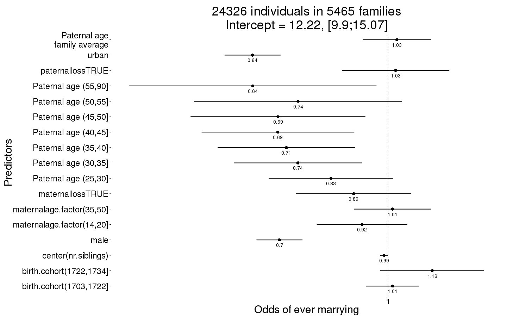
Ever_married_boot = plot_factor_response(Ever_married)
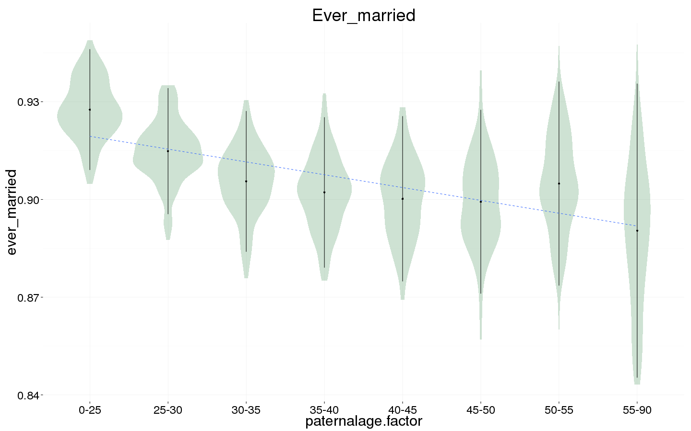
Number of children
Children <- bglmer(
children ~ maternalage.factor + paternalloss + maternalloss + center(nr.siblings) + center(spouses)*male + birth.cohort + paternalage.mean + paternalage.factor + urban + (1|idParents) + (1|idIndividu),
data= rpqa.1, subset = spouses > 0,
family = 'poisson', control = control_defaults,
fixef.prior = normal() )
summary(Children)
## Cov prior : idIndividu ~ wishart(df = 3.5, scale = Inf, posterior.scale = cov, common.scale = TRUE)
## : idParents ~ wishart(df = 3.5, scale = Inf, posterior.scale = cov, common.scale = TRUE)
## Fixef prior: normal(sd = c(10, 2.5, ...), corr = c(0 ...), common.scale = FALSE)
## Prior dev : 90.97
##
## Generalized linear mixed model fit by maximum likelihood (Laplace
## Approximation) [bglmerMod]
## Family: poisson ( log )
## Formula: children ~ maternalage.factor + paternalloss + maternalloss +
## center(nr.siblings) + center(spouses) * male + birth.cohort +
## paternalage.mean + paternalage.factor + urban + (1 | idParents) +
## (1 | idIndividu)
## Data: rpqa.1
## Control: control_defaults
## Subset: spouses > 0
##
## AIC BIC logLik deviance df.resid
## 275566 275775 -137759 275518 45007
##
## Scaled residuals:
## Min 1Q Median 3Q Max
## -2.028 -0.407 0.135 0.386 0.985
##
## Random effects:
## Groups Name Variance Std.Dev.
## idIndividu (Intercept) 0.2586 0.509
## idParents (Intercept) 0.0278 0.167
## Number of obs: 45031, groups: idIndividu, 45031; idParents, 11717
##
## Fixed effects:
## Estimate Std. Error z value Pr(>|z|)
## (Intercept) 1.96468 0.01670 117.6 < 2e-16 ***
## maternalage.factor(14,20] 0.01788 0.01385 1.3 0.19650
## maternalage.factor(35,50] 0.00011 0.01013 0.0 0.99133
## paternalloss -0.00120 0.01476 -0.1 0.93542
## maternalloss -0.00751 0.01529 -0.5 0.62322
## center(nr.siblings) 0.00673 0.00104 6.4 1.2e-10 ***
## center(spouses) 0.06876 0.01014 6.8 1.2e-11 ***
## male 0.00649 0.00972 0.7 0.50479
## birth.cohort(1706,1723] -0.06770 0.01014 -6.7 2.4e-11 ***
## birth.cohort(1723,1734] -0.07366 0.01063 -6.9 4.1e-12 ***
## birth.cohort(1734,1743] -0.05540 0.01048 -5.3 1.2e-07 ***
## birth.cohort(1743,1750] -0.03960 0.01086 -3.6 0.00027 ***
## paternalage.mean -0.00998 0.00936 -1.1 0.28667
## paternalage.factor(25,30] 0.00376 0.01415 0.3 0.79035
## paternalage.factor(30,35] -0.03348 0.01491 -2.2 0.02476 *
## paternalage.factor(35,40] -0.03189 0.01642 -1.9 0.05206 .
## paternalage.factor(40,45] -0.04932 0.01897 -2.6 0.00932 **
## paternalage.factor(45,50] -0.03975 0.02252 -1.8 0.07760 .
## paternalage.factor(50,55] -0.05776 0.02770 -2.1 0.03701 *
## paternalage.factor(55,90] -0.03180 0.03464 -0.9 0.35854
## urban -0.10792 0.00924 -11.7 < 2e-16 ***
## center(spouses):male 0.18000 0.01305 13.8 < 2e-16 ***
## ---
## Signif. codes: 0 '***' 0.001 '**' 0.01 '*' 0.05 '.' 0.1 ' ' 1
##
## Correlation matrix not shown by default, as p = 22 > 20.
## Use print(x, correlation=TRUE) or
## vcov(x) if you need it
Children_coefs = fortify_mine(Children)
plot_fortified_mer(Children_coefs, "Nr. Children (of those who had at least one spouse)")
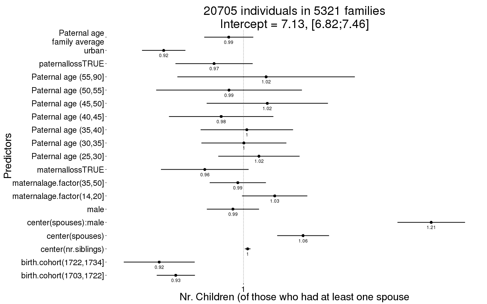
Children_boot = plot_factor_response(Children)
## Warning in bootMer(fit, mypred, nsim = 100, verbose = T, parallel =
## "multicore", : some bootstrap runs failed (5/100)
## Warning: Removed 40 rows containing non-finite values (stat_ydensity).
## Warning: Removed 40 rows containing missing values (stat_summary).
## Warning: Removed 40 rows containing missing values (stat_smooth).
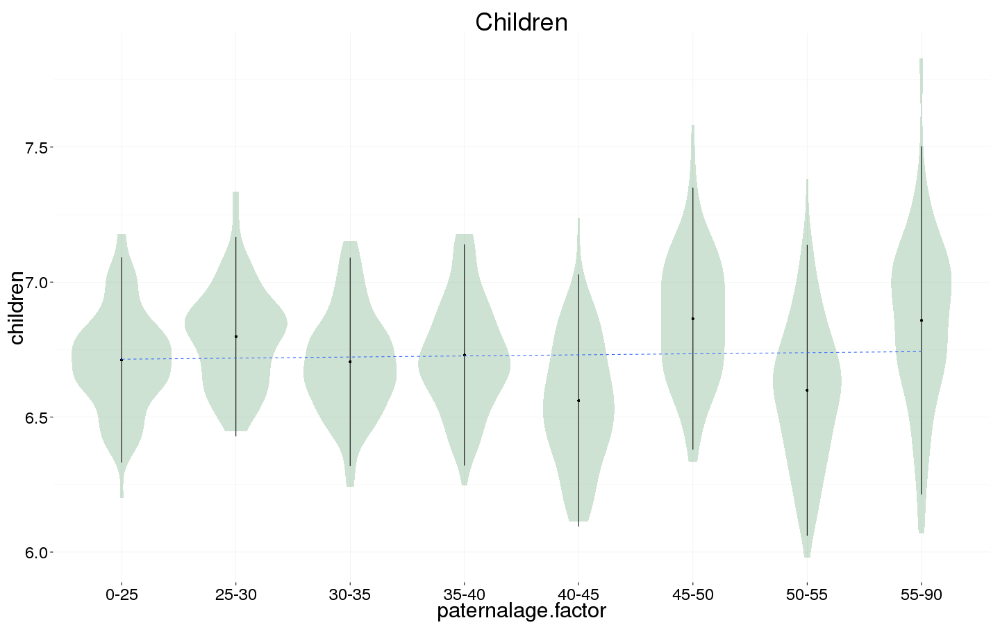
Number of children surviving first year
Children.surviving1y <- bglmer(
children.surviving1y ~ maternalage.factor + paternalloss + maternalloss + center(nr.siblings) + center(children) + male +paternalage.mean + paternalage.factor + urban + (1|idParents) + (1|idIndividu),
data= rpqa.1, subset = children > 0,
family = 'poisson', control = control_defaults,
fixef.prior = normal() )
summary(Children.surviving1y)
## Cov prior : idIndividu ~ wishart(df = 3.5, scale = Inf, posterior.scale = cov, common.scale = TRUE)
## : idParents ~ wishart(df = 3.5, scale = Inf, posterior.scale = cov, common.scale = TRUE)
## Fixef prior: normal(sd = c(10, 2.5, ...), corr = c(0 ...), common.scale = FALSE)
## Prior dev : 74.03
##
## Generalized linear mixed model fit by maximum likelihood (Laplace
## Approximation) [bglmerMod]
## Family: poisson ( log )
## Formula:
## children.surviving1y ~ maternalage.factor + paternalloss + maternalloss +
## center(nr.siblings) + center(children) + male + paternalage.mean +
## paternalage.factor + urban + (1 | idParents) + (1 | idIndividu)
## Data: rpqa.1
## Control: control_defaults
## Subset: children > 0
##
## AIC BIC logLik deviance df.resid
## 198688 198852 -99325 198650 42256
##
## Scaled residuals:
## Min 1Q Median 3Q Max
## -3.412 -0.415 0.055 0.416 3.156
##
## Random effects:
## Groups Name Variance Std.Dev.
## idIndividu (Intercept) 0.006 0.0775
## idParents (Intercept) 0.460 0.6785
## Number of obs: 42275, groups: idIndividu, 42275; idParents, 11541
##
## Fixed effects:
## Estimate Std. Error z value Pr(>|z|)
## (Intercept) 1.243665 0.013120 94.8 < 2e-16 ***
## maternalage.factor(14,20] 0.019297 0.010775 1.8 0.07331 .
## maternalage.factor(35,50] -0.002488 0.008236 -0.3 0.76256
## paternalloss 0.002112 0.012910 0.2 0.87003
## maternalloss 0.009040 0.013895 0.7 0.51530
## center(nr.siblings) 0.013822 0.001859 7.4 1.1e-13 ***
## center(children) 0.109282 0.000558 195.7 < 2e-16 ***
## male -0.009913 0.004554 -2.2 0.02951 *
## paternalage.mean 0.032724 0.011815 2.8 0.00561 **
## paternalage.factor(25,30] -0.008664 0.010869 -0.8 0.42538
## paternalage.factor(30,35] -0.019517 0.011663 -1.7 0.09424 .
## paternalage.factor(35,40] -0.022839 0.012758 -1.8 0.07343 .
## paternalage.factor(40,45] -0.037592 0.014671 -2.6 0.01040 *
## paternalage.factor(45,50] -0.053051 0.017296 -3.1 0.00216 **
## paternalage.factor(50,55] -0.073071 0.021177 -3.5 0.00056 ***
## paternalage.factor(55,90] -0.067361 0.026788 -2.5 0.01192 *
## urban -0.065054 0.011108 -5.9 4.7e-09 ***
## ---
## Signif. codes: 0 '***' 0.001 '**' 0.01 '*' 0.05 '.' 0.1 ' ' 1
##
## Correlation of Fixed Effects:
## (Intr) m.(14, m.(35, ptrnll mtrnll cnt(.) cntr() male ptrnl.
## mtr.(14,20] -0.297
## mtr.(35,50] 0.153 -0.175
## paternallss 0.005 0.005 0.009
## maternallss -0.001 -0.005 0.003 0.005
## cntr(nr.sb) 0.133 0.022 -0.032 0.111 0.128
## cntr(chldr) -0.225 0.001 0.005 0.014 0.016 -0.020
## male -0.136 0.017 -0.004 0.007 0.000 -0.002 -0.141
## paternlg.mn 0.098 -0.145 0.297 0.088 0.110 -0.190 0.012 0.000
## ptr.(25,30] -0.693 0.193 -0.103 -0.035 -0.033 0.000 0.001 -0.002 -0.129
## ptr.(30,35] -0.724 0.296 -0.194 -0.057 -0.067 0.000 0.002 -0.001 -0.216
## ptr.(35,40] -0.711 0.340 -0.325 -0.080 -0.095 0.001 0.006 -0.003 -0.288
## ptr.(40,45] -0.665 0.354 -0.469 -0.102 -0.105 0.004 0.002 -0.004 -0.345
## ptr.(45,50] -0.604 0.348 -0.549 -0.118 -0.099 0.013 -0.003 0.001 -0.383
## ptr.(50,55] -0.525 0.327 -0.557 -0.125 -0.097 0.021 -0.004 0.002 -0.395
## ptr.(55,90] -0.446 0.295 -0.552 -0.144 -0.096 0.032 -0.003 0.001 -0.415
## urban -0.157 -0.030 0.005 -0.008 -0.010 0.026 0.010 0.009 -0.038
## p.(25, p.(30, p.(35, p.(40, p.(45, p.(50, p.(55,
## mtr.(14,20]
## mtr.(35,50]
## paternallss
## maternallss
## cntr(nr.sb)
## cntr(chldr)
## male
## paternlg.mn
## ptr.(25,30]
## ptr.(30,35] 0.804
## ptr.(35,40] 0.765 0.838
## ptr.(40,45] 0.695 0.783 0.836
## ptr.(45,50] 0.615 0.709 0.780 0.822
## ptr.(50,55] 0.522 0.616 0.693 0.749 0.769
## ptr.(55,90] 0.433 0.523 0.602 0.666 0.702 0.702
## urban 0.004 0.006 0.009 0.014 0.015 0.009 0.012
Children.surviving1y_coefs = fortify_mine(Children.surviving1y)
plot_fortified_mer(Children.surviving1y_coefs, "Nr. Children who survive first year (of those who survived infancy)")
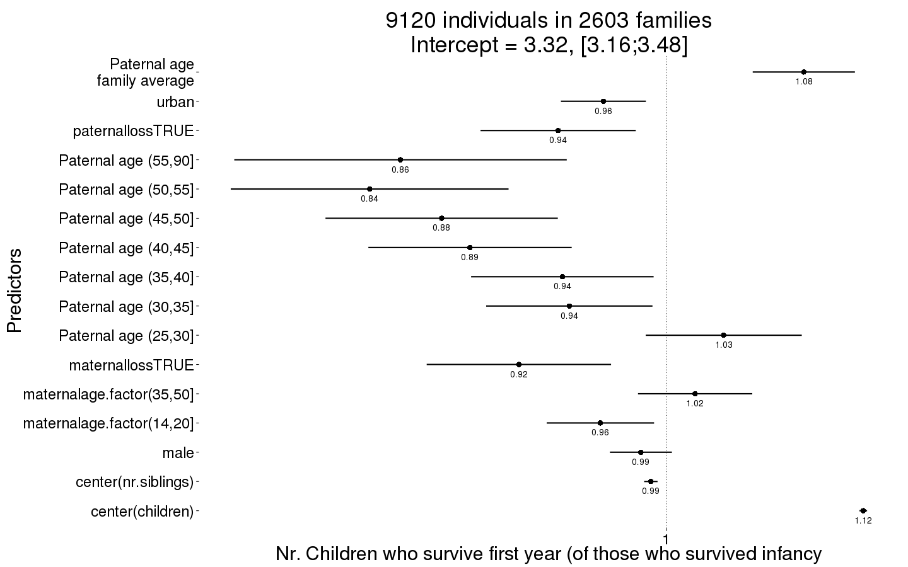
Children.surviving1y_boot = plot_factor_response(Children.surviving1y)

Number of grandchildren
Grandchildren.per.Child <- bglmer(
grandchildren ~ maternalage.factor + paternalloss + maternalloss + center(nr.siblings) + center(children) + male +paternalage.mean + paternalage.factor + urban + (1|idParents) + (1|idIndividu),
data= rpqa.1, subset = children > 0 & byear <= 1700,
family = 'poisson', control = control_defaults,
fixef.prior = normal() )
## Warning in optwrap(optimizer, devfun, start, rho$lower, control = control,
## : convergence code 1 from bobyqa: bobyqa -- maximum number of function
## evaluations exceeded
summary(Grandchildren.per.Child)
## Cov prior : idIndividu ~ wishart(df = 3.5, scale = Inf, posterior.scale = cov, common.scale = TRUE)
## : idParents ~ wishart(df = 3.5, scale = Inf, posterior.scale = cov, common.scale = TRUE)
## Fixef prior: normal(sd = c(10, 2.5, ...), corr = c(0 ...), common.scale = FALSE)
## Prior dev : 69.65
##
## Generalized linear mixed model fit by maximum likelihood (Laplace
## Approximation) [bglmerMod]
## Family: poisson ( log )
## Formula:
## grandchildren ~ maternalage.factor + paternalloss + maternalloss +
## center(nr.siblings) + center(children) + male + paternalage.mean +
## paternalage.factor + urban + (1 | idParents) + (1 | idIndividu)
## Data: rpqa.1
## Control: control_defaults
## Subset: children > 0 & byear <= 1700
##
## AIC BIC logLik deviance df.resid
## 58795 58924 -29378 58757 6492
##
## Scaled residuals:
## Min 1Q Median 3Q Max
## -2.1783 -0.1398 0.0363 0.1342 0.6747
##
## Random effects:
## Groups Name Variance Std.Dev.
## idIndividu (Intercept) 0.520 0.721
## idParents (Intercept) 0.106 0.325
## Number of obs: 6511, groups: idIndividu, 6511; idParents, 2053
##
## Fixed effects:
## Estimate Std. Error z value Pr(>|z|)
## (Intercept) 2.61042 0.05224 50.0 <2e-16 ***
## maternalage.factor(14,20] 0.02030 0.03376 0.6 0.5476
## maternalage.factor(35,50] 0.00799 0.03559 0.2 0.8223
## paternalloss -0.00905 0.04654 -0.2 0.8458
## maternalloss -0.11599 0.05395 -2.1 0.0316 *
## center(nr.siblings) -0.00338 0.00375 -0.9 0.3676
## center(children) 0.17279 0.00244 70.8 <2e-16 ***
## male -0.03935 0.02013 -2.0 0.0506 .
## paternalage.mean 0.04562 0.03077 1.5 0.1382
## paternalage.factor(25,30] -0.04205 0.05072 -0.8 0.4070
## paternalage.factor(30,35] -0.08004 0.05412 -1.5 0.1392
## paternalage.factor(35,40] -0.07201 0.05904 -1.2 0.2225
## paternalage.factor(40,45] -0.12577 0.06550 -1.9 0.0548 .
## paternalage.factor(45,50] -0.23546 0.07459 -3.2 0.0016 **
## paternalage.factor(50,55] -0.25075 0.08869 -2.8 0.0047 **
## paternalage.factor(55,90] -0.28821 0.10840 -2.7 0.0078 **
## urban -0.27330 0.02561 -10.7 <2e-16 ***
## ---
## Signif. codes: 0 '***' 0.001 '**' 0.01 '*' 0.05 '.' 0.1 ' ' 1
##
## Correlation of Fixed Effects:
## (Intr) m.(14, m.(35, ptrnll mtrnll cnt(.) cntr() male ptrnl.
## mtr.(14,20] -0.365
## mtr.(35,50] 0.131 -0.109
## paternallss 0.033 -0.044 0.102
## maternallss 0.022 -0.040 0.076 0.059
## cntr(nr.sb) -0.015 0.053 -0.058 0.183 0.165
## cntr(chldr) -0.225 -0.007 0.014 0.015 0.032 -0.016
## male -0.163 0.025 -0.007 0.014 0.017 0.020 -0.074
## paternlg.mn 0.294 -0.283 0.440 0.199 0.184 -0.218 0.021 -0.004
## ptr.(25,30] -0.804 0.159 -0.097 -0.062 -0.040 0.024 0.008 -0.003 -0.207
## ptr.(30,35] -0.850 0.283 -0.176 -0.083 -0.078 0.050 0.014 -0.004 -0.371
## ptr.(35,40] -0.839 0.346 -0.268 -0.120 -0.105 0.066 0.003 -0.005 -0.485
## ptr.(40,45] -0.803 0.367 -0.353 -0.148 -0.121 0.071 -0.006 0.005 -0.562
## ptr.(45,50] -0.748 0.370 -0.447 -0.169 -0.135 0.079 -0.019 0.003 -0.630
## ptr.(50,55] -0.668 0.352 -0.490 -0.188 -0.154 0.078 -0.010 0.001 -0.648
## ptr.(55,90] -0.586 0.325 -0.498 -0.209 -0.145 0.091 -0.017 -0.011 -0.670
## urban -0.136 -0.030 -0.009 0.019 -0.030 0.022 0.033 0.014 0.007
## p.(25, p.(30, p.(35, p.(40, p.(45, p.(50, p.(55,
## mtr.(14,20]
## mtr.(35,50]
## paternallss
## maternallss
## cntr(nr.sb)
## cntr(chldr)
## male
## paternlg.mn
## ptr.(25,30]
## ptr.(30,35] 0.791
## ptr.(35,40] 0.759 0.841
## ptr.(40,45] 0.711 0.807 0.848
## ptr.(45,50] 0.655 0.762 0.818 0.841
## ptr.(50,55] 0.576 0.687 0.752 0.785 0.810
## ptr.(55,90] 0.500 0.612 0.683 0.723 0.757 0.745
## urban -0.003 -0.014 -0.011 0.000 0.005 0.000 0.014
Grandchildren.per.Child_coefs = fortify_mine(Grandchildren.per.Child)
plot_fortified_mer(Grandchildren.per.Child_coefs, "Nr. of grandchildren per child")
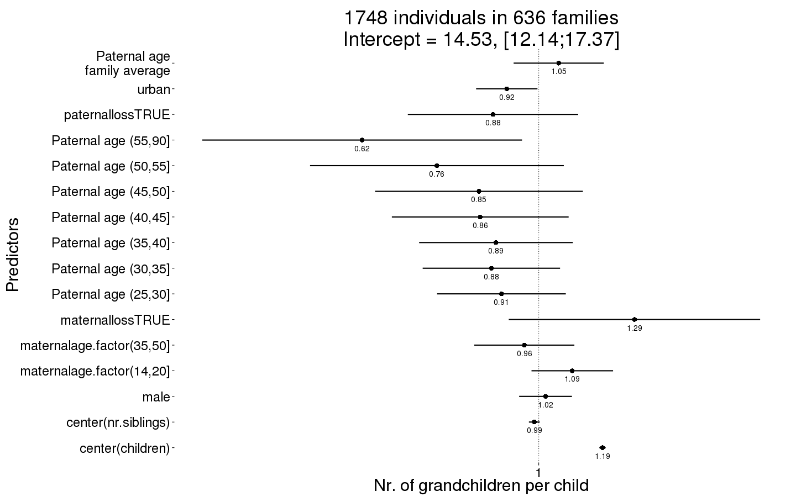
Grandchildren.per.Child_boot = plot_factor_response(Grandchildren.per.Child)
## Warning in bootMer(fit, mypred, nsim = 100, verbose = T, parallel =
## "multicore", : some bootstrap runs failed (100/100)
## Error in eval(expr, envir, enclos): object 'value' not found
Any surviving children
Any_surviving_children <- bglmer(
any_surviving_children ~ maternalage.factor + paternalloss + maternalloss + center(nr.siblings) + birth.cohort + male + paternalage.mean + paternalage.factor + urban + (1|idParents),
data= rpqa.1, subset = byear <= 1740,
family = 'binomial', control = control_defaults,
fixef.prior = normal() )
summary(Any_surviving_children)
## Cov prior : idParents ~ wishart(df = 3.5, scale = Inf, posterior.scale = cov, common.scale = TRUE)
## Fixef prior: normal(sd = c(10, 2.5, ...), corr = c(0 ...), common.scale = FALSE)
## Prior dev : 74.78
##
## Generalized linear mixed model fit by maximum likelihood (Laplace
## Approximation) [bglmerMod]
## Family: binomial ( logit )
## Formula: any_surviving_children ~ maternalage.factor + paternalloss +
## maternalloss + center(nr.siblings) + birth.cohort + male +
## paternalage.mean + paternalage.factor + urban + (1 | idParents)
## Data: rpqa.1
## Control: control_defaults
## Subset: byear <= 1740
##
## AIC BIC logLik deviance df.resid
## 81829 82010 -40895 81789 61141
##
## Scaled residuals:
## Min 1Q Median 3Q Max
## -1.935 -0.925 -0.439 0.888 2.618
##
## Random effects:
## Groups Name Variance Std.Dev.
## idParents (Intercept) 0.254 0.504
## Number of obs: 61161, groups: idParents, 9756
##
## Fixed effects:
## Estimate Std. Error z value Pr(>|z|)
## (Intercept) 0.65389 0.04432 14.8 < 2e-16 ***
## maternalage.factor(14,20] -0.08088 0.03768 -2.1 0.03185 *
## maternalage.factor(35,50] -0.07758 0.02821 -2.7 0.00597 **
## paternalloss -0.16701 0.04012 -4.2 3.1e-05 ***
## maternalloss -0.47340 0.04003 -11.8 < 2e-16 ***
## center(nr.siblings) -0.01082 0.00298 -3.6 0.00028 ***
## birth.cohort(1706,1723] -0.12202 0.02565 -4.8 2.0e-06 ***
## birth.cohort(1723,1734] -0.39583 0.02661 -14.9 < 2e-16 ***
## birth.cohort(1734,1743] -0.29028 0.02903 -10.0 < 2e-16 ***
## male -0.31619 0.01704 -18.6 < 2e-16 ***
## paternalage.mean 0.03692 0.02628 1.4 0.16003
## paternalage.factor(25,30] 0.01944 0.04084 0.5 0.63401
## paternalage.factor(30,35] -0.04956 0.04286 -1.2 0.24752
## paternalage.factor(35,40] -0.08345 0.04710 -1.8 0.07641 .
## paternalage.factor(40,45] -0.12660 0.05391 -2.3 0.01885 *
## paternalage.factor(45,50] -0.11235 0.06331 -1.8 0.07595 .
## paternalage.factor(50,55] -0.18048 0.07643 -2.4 0.01822 *
## paternalage.factor(55,90] -0.12190 0.09455 -1.3 0.19733
## urban -0.76415 0.02353 -32.5 < 2e-16 ***
## ---
## Signif. codes: 0 '***' 0.001 '**' 0.01 '*' 0.05 '.' 0.1 ' ' 1
##
## Correlation of Fixed Effects:
## (Intr) m.(14, m.(35, ptrnll mtrnll cnt(.) b.(170 b.(172 b.(173
## mtr.(14,20] -0.330
## mtr.(35,50] 0.172 -0.093
## paternallss 0.026 -0.036 0.088
## maternallss 0.027 -0.043 0.088 0.082
## cntr(nr.sb) 0.023 -0.003 -0.022 0.207 0.228
## b.(1706,172 -0.335 0.089 -0.044 -0.006 -0.002 -0.046
## b.(1723,173 -0.359 0.104 -0.053 0.008 -0.002 -0.059 0.569
## b.(1734,174 -0.306 0.080 -0.073 0.031 0.001 -0.065 0.501 0.569
## male -0.201 0.002 0.003 0.009 0.008 0.002 0.000 0.009 0.007
## paternlg.mn 0.277 -0.206 0.461 0.183 0.212 -0.123 0.034 0.079 0.094
## ptr.(25,30] -0.758 0.153 -0.101 -0.044 -0.042 -0.002 0.011 0.007 -0.011
## ptr.(30,35] -0.796 0.250 -0.192 -0.077 -0.086 -0.005 0.019 0.013 -0.021
## ptr.(35,40] -0.783 0.290 -0.310 -0.111 -0.121 -0.007 0.014 0.017 -0.022
## ptr.(40,45] -0.736 0.296 -0.435 -0.143 -0.148 -0.010 0.011 0.017 -0.021
## ptr.(45,50] -0.673 0.289 -0.506 -0.163 -0.157 -0.004 0.009 0.006 -0.018
## ptr.(50,55] -0.601 0.272 -0.512 -0.173 -0.156 0.011 0.009 0.002 -0.015
## ptr.(55,90] -0.533 0.257 -0.513 -0.194 -0.162 0.040 -0.001 -0.016 -0.031
## urban -0.149 -0.006 0.005 -0.012 -0.007 0.041 0.058 0.095 0.107
## male ptrnl. p.(25, p.(30, p.(35, p.(40, p.(45, p.(50, p.(55,
## mtr.(14,20]
## mtr.(35,50]
## paternallss
## maternallss
## cntr(nr.sb)
## b.(1706,172
## b.(1723,173
## b.(1734,174
## male
## paternlg.mn 0.003
## ptr.(25,30] -0.003 -0.199
## ptr.(30,35] -0.001 -0.347 0.787
## ptr.(35,40] 0.001 -0.470 0.751 0.821
## ptr.(40,45] -0.002 -0.564 0.690 0.777 0.823
## ptr.(45,50] -0.001 -0.625 0.618 0.716 0.779 0.813
## ptr.(50,55] 0.002 -0.651 0.539 0.641 0.712 0.756 0.767
## ptr.(55,90] -0.005 -0.705 0.470 0.579 0.659 0.714 0.734 0.723
## urban 0.022 -0.009 -0.003 -0.012 -0.016 -0.011 -0.014 -0.010 -0.011
Any_surviving_children_coefs = fortify_mine(Any_surviving_children)
plot_fortified_mer(Any_surviving_children_coefs, "Any surviving children")
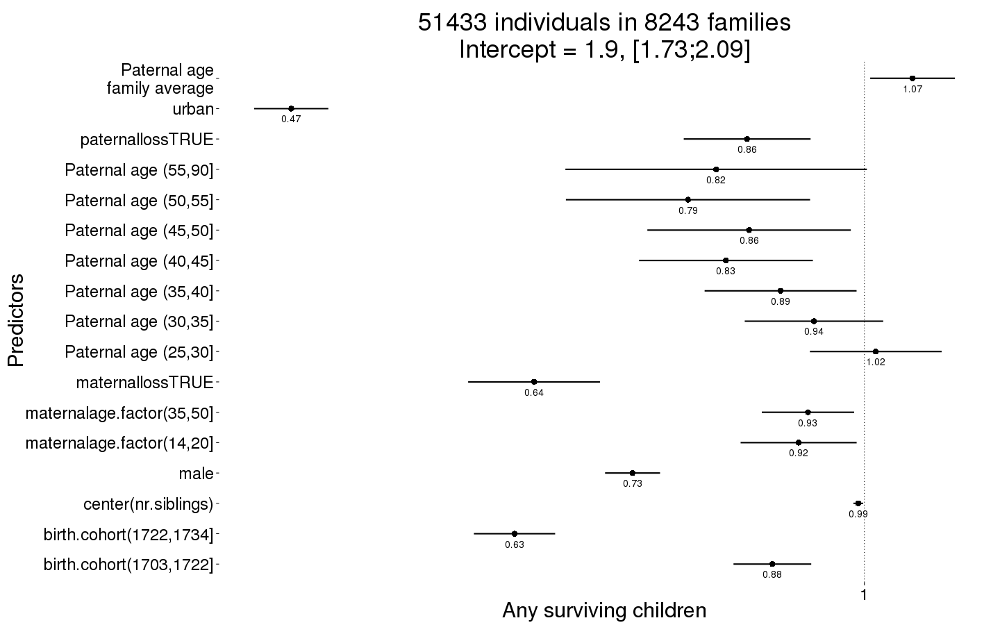
Any_surviving_children_boot = plot_factor_response(Any_surviving_children)
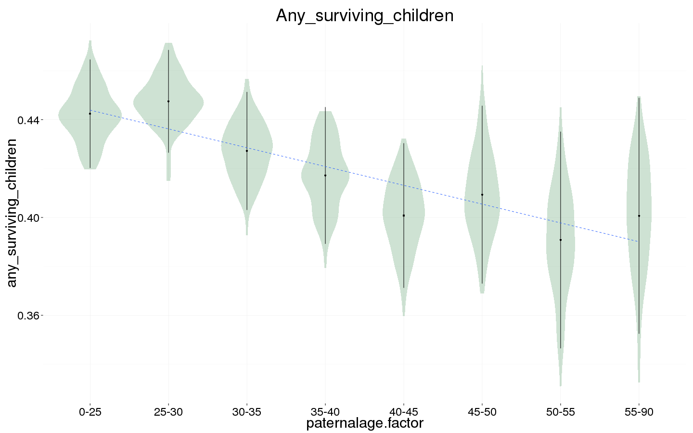